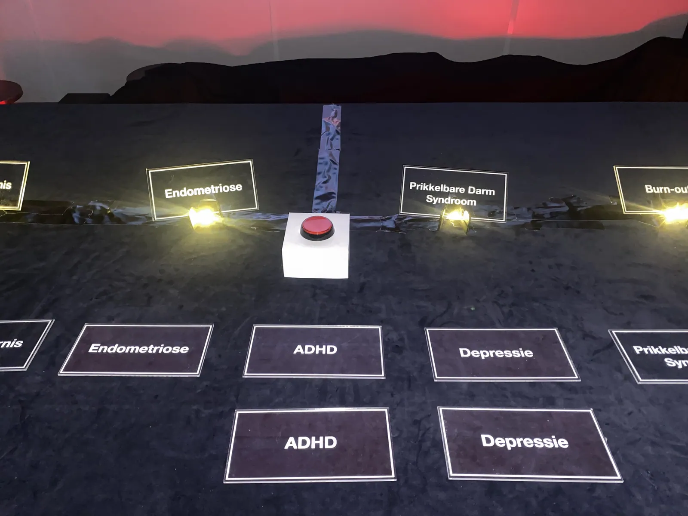
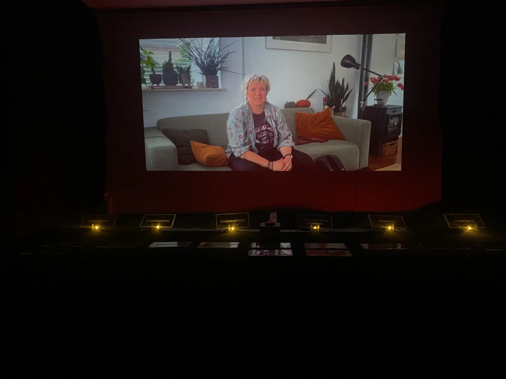
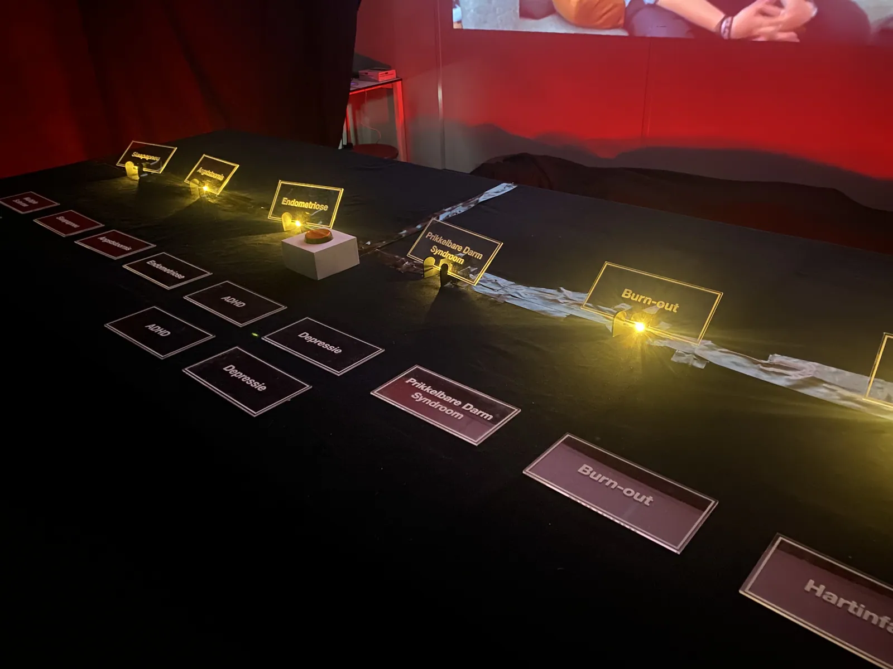
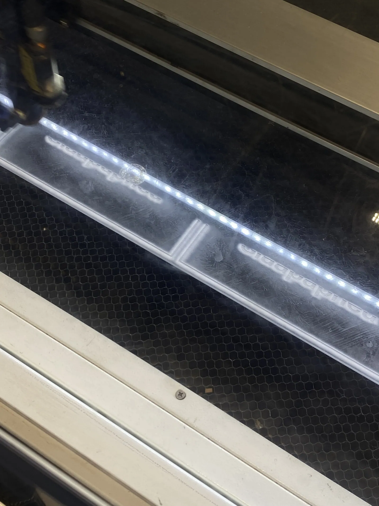
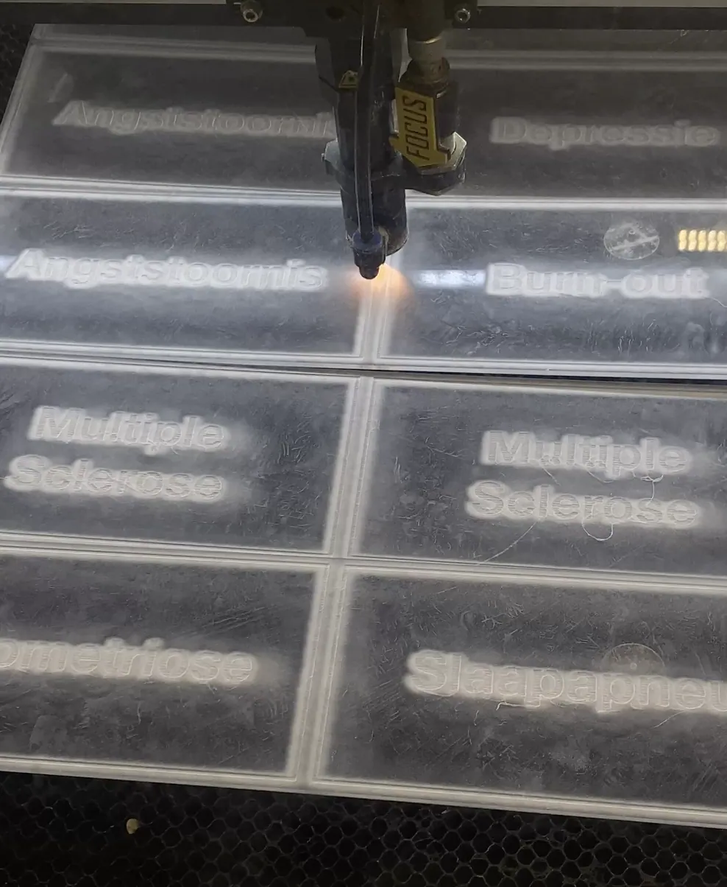
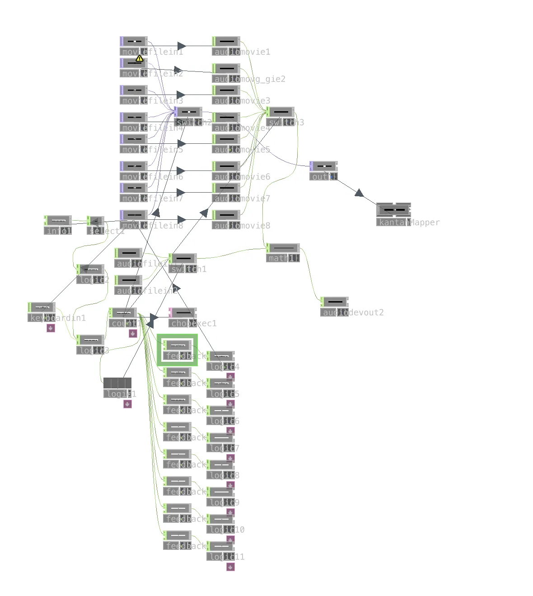

Ze zei het al
An interactive installation at Foam Museum that lets visitors feel how male-based medical research leads to wrong diagnoses for women.
- role
- Concept, interaction, sound and exhibition design
- timeline
- 7 weeks
- tools
- TouchDesigner, Adobe Premiere, Illustrator, Ableton, laser cutting
- type
- Final group project
the challenge
Medical research was long based on male bodies, so women’s complaints are often dismissed or misdiagnosed. We wanted visitors to feel that bias, not just read about it.
the solution
Visitors play doctor: they watch video fragments of three male and three female patients with the same condition and place a laser-cut plaque as their diagnosis. The men’s cases are easy to read, the women’s are not. I composed the clinical soundscape and built the whole experience in TouchDesigner.





